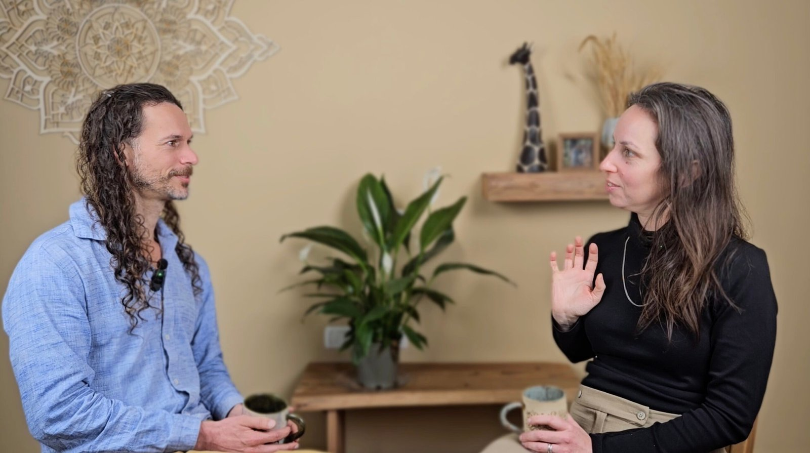

The Art of Communication
The Art of Communication
Empathy That Transforms Relationships
Tuesdays, Oct 27 – Dec 29 2026 · 11am–2pm ET / 8am PT / 5pm CET / 6pm Israel (Oct 27 session runs earlier)
Apply for the Art of Empathy
You've Completed NVC Foundations, But You Keep Hitting the Same Walls
You know how to reflect feelings and needs, but it often sounds clunky or feels inadequate.
The Deeper Frustration
You've experienced the profound relief of being truly heard. You know empathy can "cut through noise and stories and meet someone where they are." But when you try to offer that same gift to others — especially in charged moments — you feel clunky, ineffective, or completely reactive. We need to practice empathy as an art, not just a technique.

For over 15 years, I've been exploring empathy as an art — not just reflecting feelings and needs, but meeting people in ways that help us "fall in love" with their humanity.
I've guided hundreds of people beyond basic NVC into an empathy that feels natural, connects deeply, and works even in the most challenging situations.
The 10-Week Journey
Learn to offer natural, connecting empathy without sounding like an "NVC weirdo." Practice empathy that feels authentic and lands with people who've never heard of NVC.
Move beyond surface-level reflections to touch "the beautiful heart of life." Learn to fall in love with people's humanity and reveal the hidden beauty in their struggles.
Master the art of empathizing with unmet needs and disappointment. Help people stay whole and present when life doesn't go as hoped.
Discover how to bring empathy to the unique world of children's emotions and needs without losing your adult perspective or authority.
Learn to empathize skillfully with guilt and shame, helping others (and yourself) find the organic learning these difficult emotions offer.
Practice empathy that actually heals relationship wounds, not just acknowledges them. Move from rupture to deeper intimacy.
Develop the confidence to stay present and empathic with intense anger, understanding and completing "the arc of anger like an aikido master."
Learn to receive gratitude and appreciation empathically, and help others savor the rich moments that often get overlooked.
Consolidate empathy as your core orientation and skillset, with confidence to meet whatever life brings.

You Can Expect To:
8:00 AM – 11:00 AM PT / 11:00 AM – 2:00 PM ET / 5:00 PM – 8:00 PM CET / 6:00 PM – 9:00 PM Israel
*Note: On October 27, session runs 4:00–7:00 PM CET / 5:00–8:00 PM Israel.
Dec 22: Either a skip week, guest-led, or assistant-led session.
How We Relate to Money
Ah yes, cost, the lock on the door of entry to what we desire. So deeply ingrained in our society is the transaction — unlock access by giving over money. I mourn that the economy of interdependence, relationality, and gift has been eclipsed by the economy of exchange and accumulation. These teachings are so precious to me that I want everybody to have them — I believe they have a key role to play in creating a sustainable and thriving world, and I want to make them available to people of economically diverse backgrounds. Sharing this path is my passion as well as the source of my livelihood; your financial contribution helps me and my team meet our needs so we can live, give, and teach from a resourced place. With all that in mind, we offer a sliding scale, your choice, in consideration of your budget and your desire to support our team and this work. Less or more than that range is welcome too, upon request.
How to Register
Check the Prerequisites
NVC Level 1 foundations completed with Danny, or equivalent training, plus a strong intention to be consistently and reliably present at sessions.
Fill Out an Application
So we can check this is the right fit and get to know you a little before we begin. We'll follow up by email once reviewed.
Complete Payment
Once approved, we'll send payment details so you can choose the amount that works best for you.
Voices from Our Community
Voices from Our Community
"Learning NVC was like learning the fine melody of the heart, it helps navigate through the delicate and precious act of two people's conflicts coming together from off key into a harmony."
"I was able to create an open heart relationship with a complete stranger in a few simple sentence exchanges. I have never experienced anything like this."
"Learning and using NVC actually facilitated deepening relationships in our whole group, so every week we dropped back into a supportive, loving and curious community."
FAQs
You Have the Foundation. Now Develop the Artistry.
Turn basic skills into profound connection — even in your most challenging relationships.
Click Here to Apply